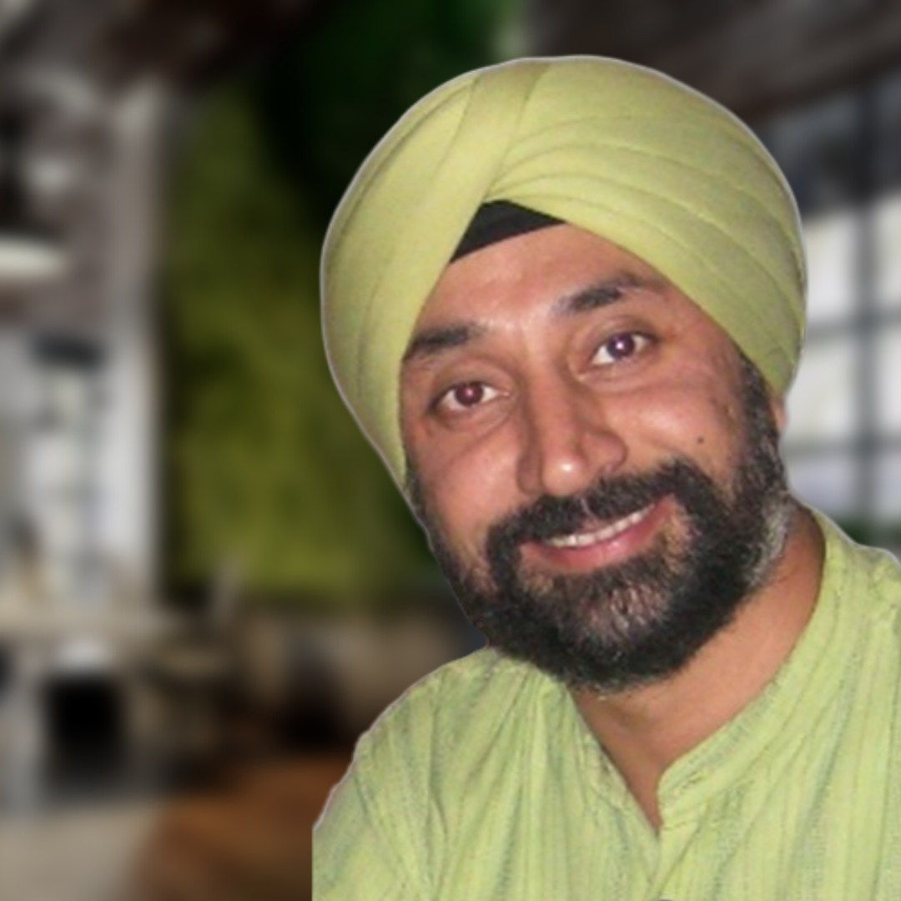

Meet the speakers !
Pankaj Chawla
FOUNDER & CEO, MSME STRATEGY CONSULTANTS
Mr. Pankaj, a strategic business
partner and an Entrepreneur, a
chartered accountant with over
20 years of experience in
diverse fields.With extensive
experience in process-based
solutions across diverse
industries, from telecom to
finance, he has mentored
startups and empowered
individuals to pursue their
dreams.
Shriti Tyagi
WRITER, Founder- Beyond Bombay & Beyond Delhi
Ms. Shriti is the founder of Manna
Makers, a
theatrical group, and an avid reviewer of
theatrical pieces. Ms Shriti has
also won the Katha Translator
of The Year Award in 2023.Her
journey culminated in Beyond
Bombay & Beyond Delhi - niche
travel collectives engaging
people with the past & present
of the cities they call home.
Souvik Bhattacharjya
ASSOCIATE DIRECTOR and Sr. Fellow TERI sustainability professional
As the Associate Director at
The Energy and Resources
Institute (TERI), Mr. Souvik
Bhattacharjya an expert in
the field of resource efficiency
and governance. With over 18
years of experience, he also
teaches at the TERI School of
Advanced Studies and plays a
crucial role in the South Asia
Regional Centre of Excellence
for Sustainable Consumption
and Production.
Harjeet Singh
Head of Global Political Strategy - Climate Action Network International
Mr. Harjeet Singh is a global expert
on the issues of climate impacts,
migration, and adaptation. He is
the Head of Global Political
Strategy at Climate Action
Network International and serves
as Global Director – Engagement
and Partnerships at the Fossil
Fuel Non-Proliferation Treaty
Initiative.


Father J.A Carvalho
Educationist, Director of Fr. Agnel group of Schools
In times of both smooth sailing
and testing moments, Father
Carvalho - our school's Director
has embodied true leadership.
He guides us not only though
words, but by walking the path
alongside us—our guiding light
when the going gets tough. With
a keen eye for improvement, he's
been our greatest advocate,
always challenging us to be
better versions of ourselves.
Smriti R. Sharma
SOCIOLOGIST AND RESEARCH ASSISTANT
Ms. Smriti R. Sharma has completed her
undergraduate degree in Political
Science from Kirori Mal College and
has an MA in Sociology from Delhi
School of Economics, she is
currently working as a research
assistant for an organisation
committed to facilitating authentic
and ethical sociological research.
She recently qualified the UGC
National Eligibility Test for Assistant
Professorship and is looking to
build a life dedicated to academia
and education.